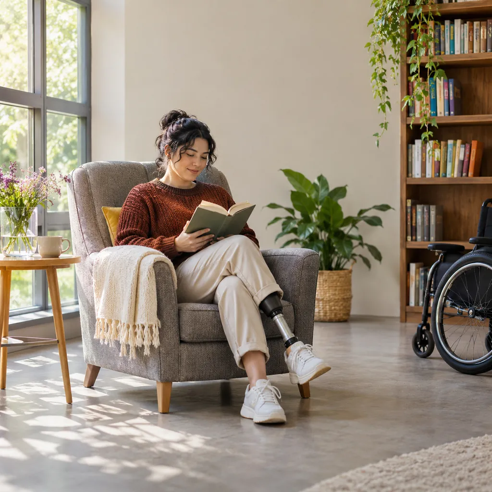
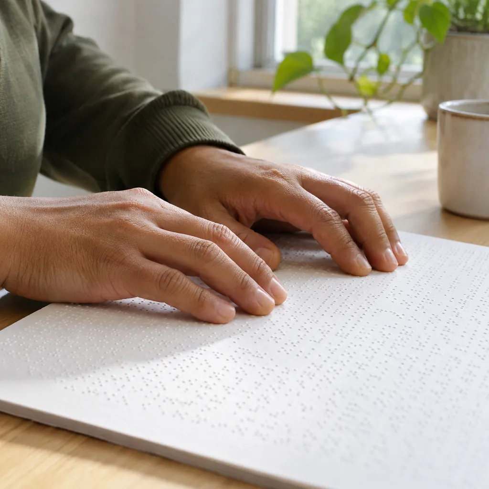
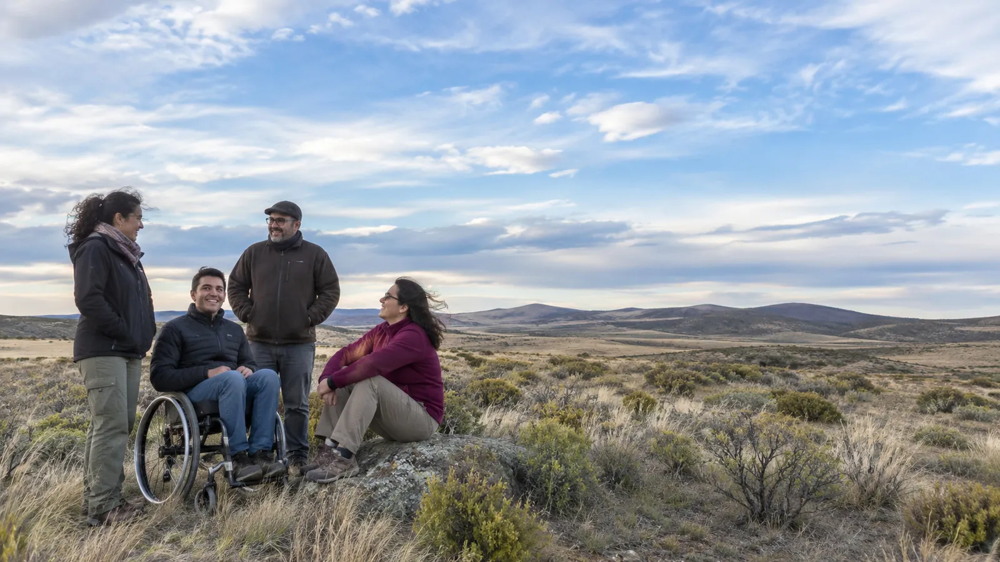
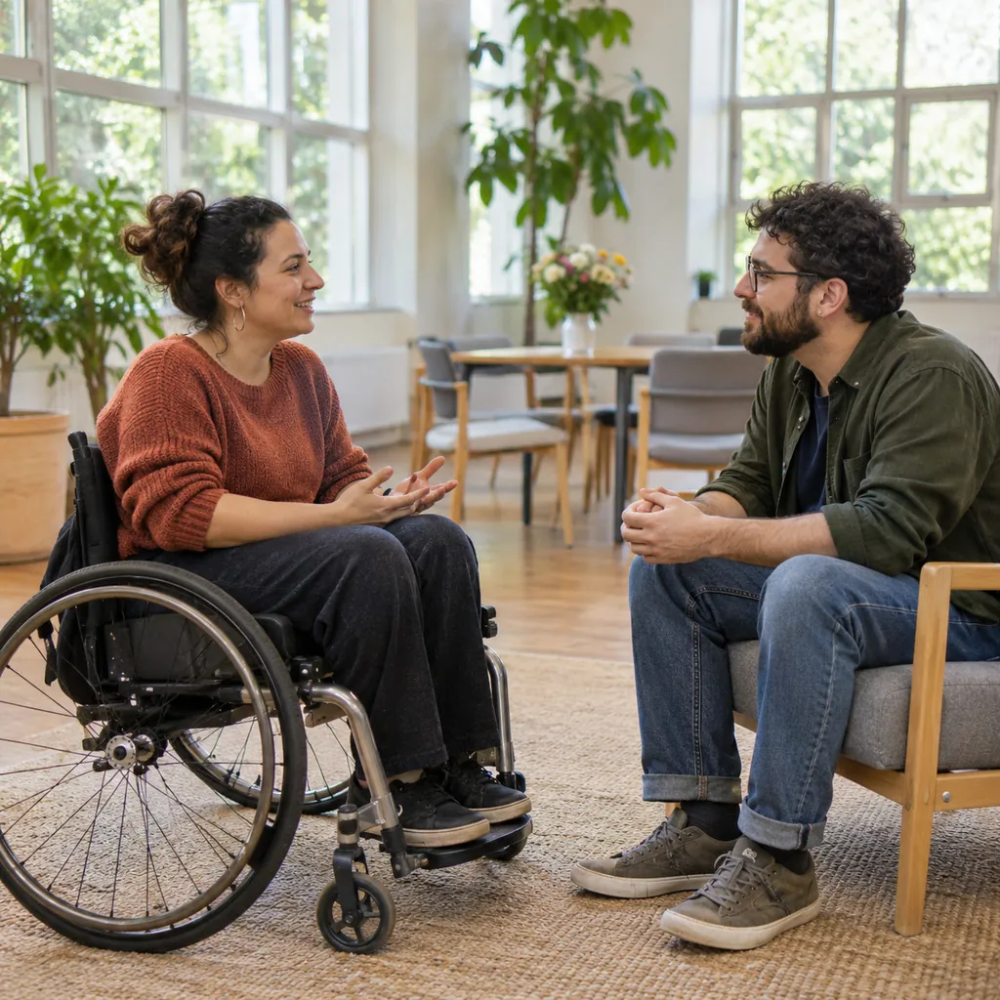
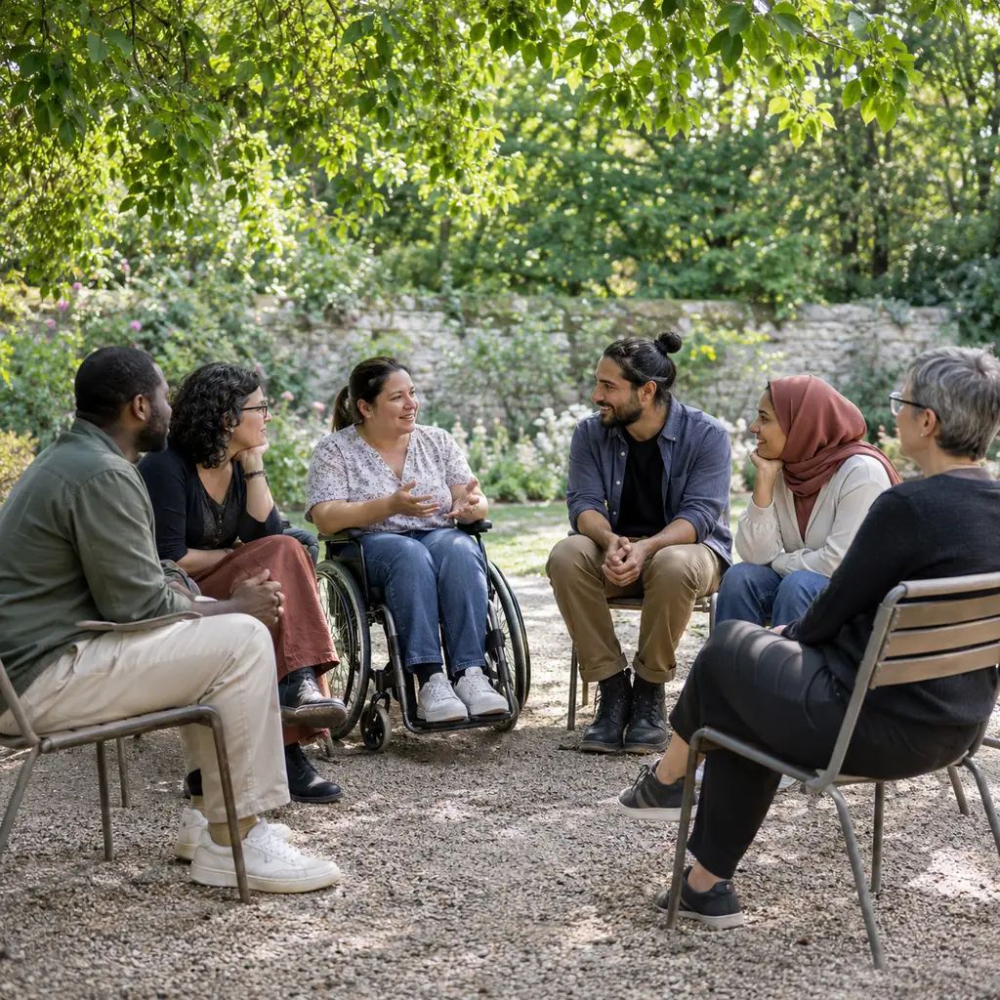

Memorias
Lo vivido, contado en primera persona.
Leer las memoriasDiscapacidad y derechos humanos desde la Patagonia argentina
Un espacio para compartir experiencias, aportar evidencia científica y abrir el diálogo.
Chubut · Patagonia argentina
Lo vivido, contado en primera persona.
Leer las memoriasDatos y fuentes para conversar en serio.
Ver las fuentesUn canal abierto para preguntar y opinar.
Sumarme a la charlaEscribo a los 72 años, desde Chubut, sobre lo que significa vivir con una discapacidad y sobre los derechos que la acompañan. Lo hago para que sirva a otras personas.
Memoria
Los trámites, las barreras de todos los días y lo que se aprende con el tiempo, contado por quien lo vive.
Conversar sobre este temaDerechos
Accesibilidad, salud, trabajo y vida independiente: lo que dicen las leyes y lo que pasa en la práctica.
Conversar sobre este temaPatagonia
Distancias, servicios y comunidad: la discapacidad mirada desde Chubut y la Patagonia argentina.
Conversar sobre este temaAclaraciones
Respuestas tranquilas a lo que se dijo en internet, con hechos y en primera persona.
Conversar sobre este temaContar lo vivido, sumar evidencia y conversar con respeto: de eso se trata este espacio.
Sobre mí se escribieron muchas cosas en internet, y no todas son justas. Acá cuento mi versión con calma, en primera persona y sin agravios, para que cada quien saque sus propias conclusiones.
Juan José Soto Vargas Chubut, Patagonia argentina

Cada tema se apoya en documentos que cualquiera puede consultar: tratados, leyes y estudios oficiales.
1 de cada 6
personas en el mundo vive con una discapacidad importante.
Organización Mundial de la Salud, nota «Discapacidad y salud», 2023.
Tratado · ONU, 2006
Entiende la discapacidad como el resultado de la interacción entre las personas y las barreras del entorno.
Leer la ConvenciónLeyes · Argentina, 2008 y 2014
La primera aprueba la Convención; la segunda le da jerarquía constitucional.
Estudio · INDEC, 2018
El 10,2 % de la población de 6 años y más tiene alguna dificultad, en localidades de 5.000 habitantes o más.
Ver el estudioInforme · OMS, 2023
Explica por qué las personas con discapacidad encuentran más barreras para acceder a la salud y qué pueden hacer los gobiernos.
Leer la nota
¿Tenés un estudio o un dato para sumar? Compartilo por WhatsApp

Las distancias, el clima y la comunidad cambian la forma de vivir la discapacidad. Este espacio la cuenta desde Chubut.


Sí. El diálogo está abierto a cualquier persona con ganas de escuchar, preguntar o aportar, tenga o no una discapacidad.
No. Es un proyecto personal y sin fines de lucro: no se vende nada ni se pide dinero.
Sí. Mandá el enlace o el nombre del documento por WhatsApp y Juan José lo revisa para sumarlo a la conversación.
No. Lo que escribís por WhatsApp o por el formulario queda entre vos y Juan José.
Chubut · Patagonia argentina